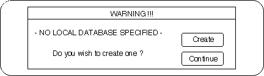
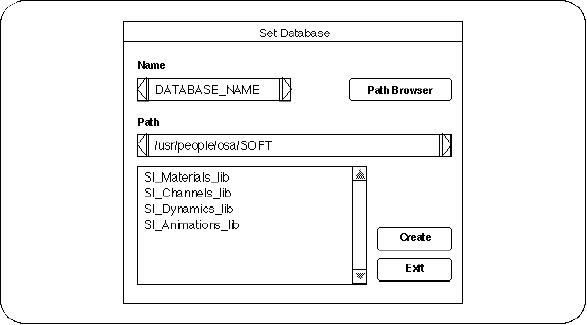

Return to previous page | Return to menu | Go to next page
When SOFTIMAGE is launched for the first time, Fig. 1-3 is displayed. Click “Create” here.

The “Set Database” window will appear (Figure 1-4).

“DATABASE_NAME” is entered as a temporary name in “Name”. Enter the name of your favorite database here (eg “STUDY”) and click the “Create” button. .
Then, Figure 1-5 appears and informs you that the database has been created
If you click “OK” here, the item “STUDY RW” should be added under SI_Animation_lib in Figure 1-4. Now you are ready to work. Click “EXIT” in Figure 1-4.